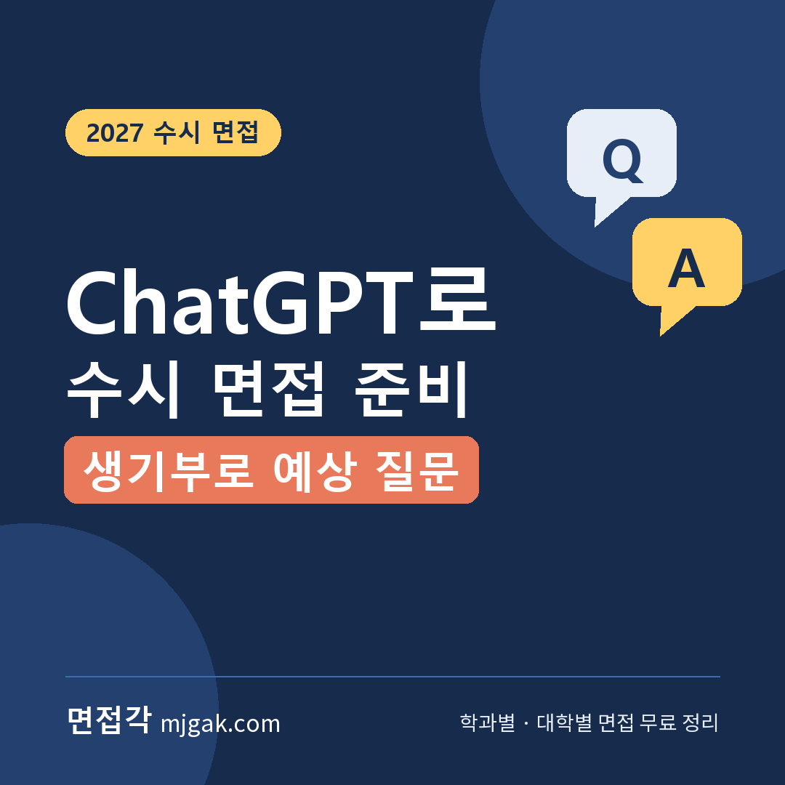
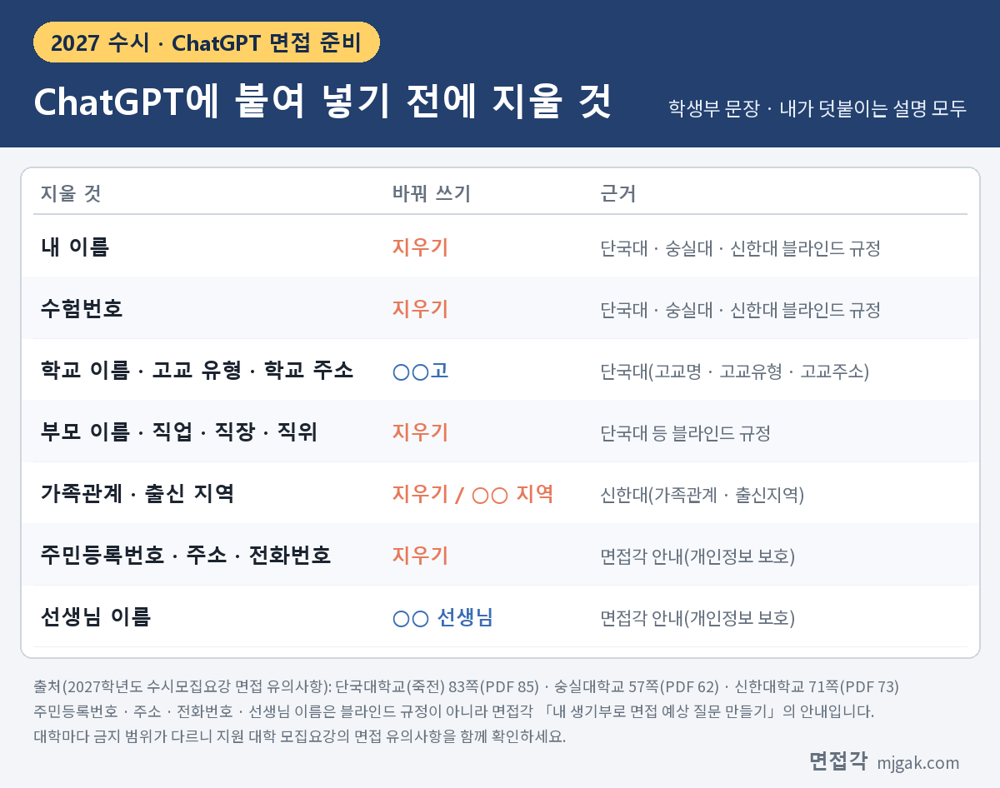
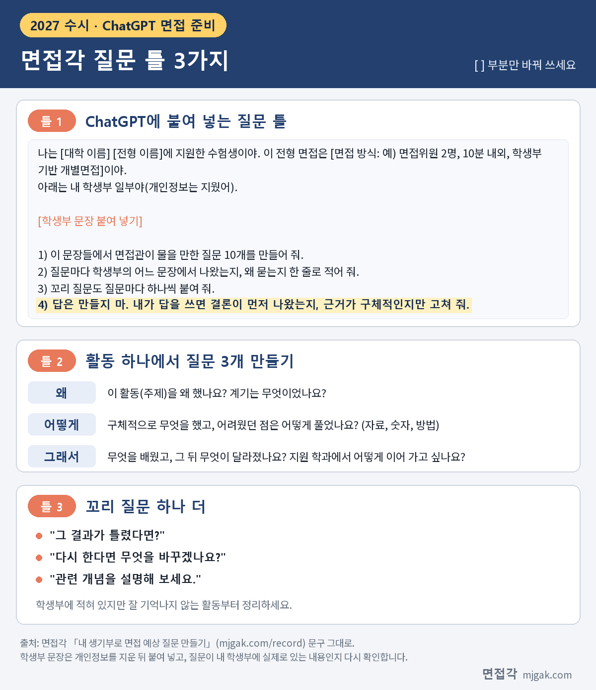
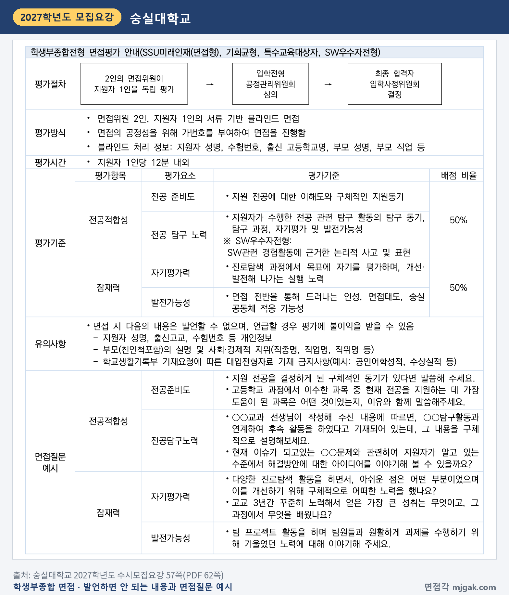
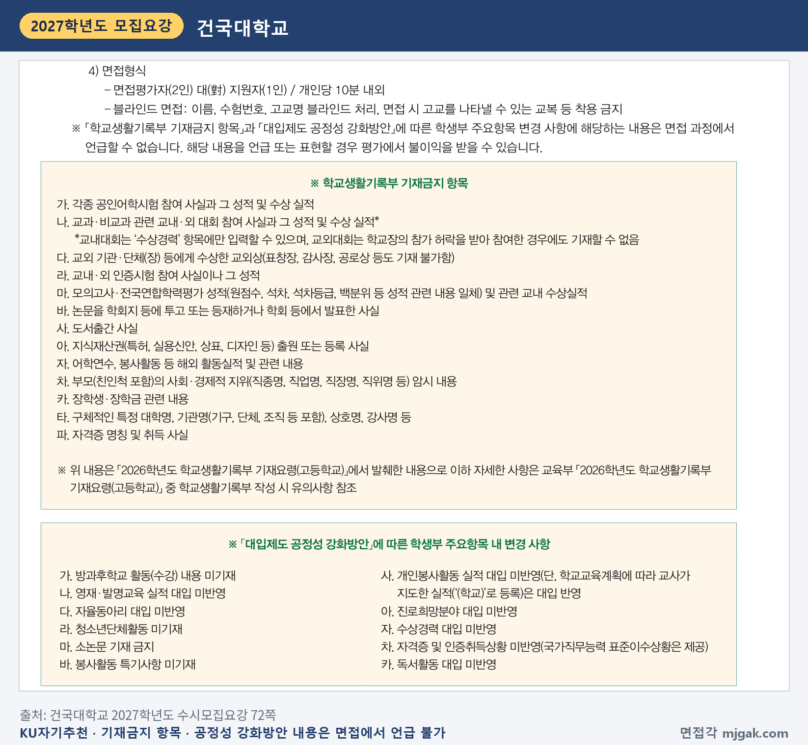

Ctrl+V (서식 유지됨)제목
본문 (이 영역 전체가 복사됩니다)
📷 여기에 이미지 넣기 — 썸네일 — thumb-gpt.png (대표 이미지로 지정)
ChatGPT에 학생부 문장을 붙여 넣고 면접 예상 질문을 만들어 달라고 하면 질문 목록이 금방 나옵니다. 세계일보 [입시톡톡] 기사(2025년 10월 7일)도 학생부를 올려 학종 면접 질문을 만드는 방법을 소개하면서, 진학사 입시전략연구소 우연철 소장의 말을 빌려 "기계적으로 암기하기보다는 본인의 경험을 구체적으로 풀어내는 훈련"을 함께 하라고 전했습니다. 베타뉴스(2026년 10월 20일)는 전남광주통합특별시교육청이 2027학년도 수시 면접을 앞둔 수험생에게 모의면접을 운영하고, 목포센터에서는 AI를 활용한 면접 연습도 할 수 있게 했다고 보도했습니다. AI를 쓰는 방법은 여러 가지지만, 순서를 잘못 잡으면 개인정보가 그대로 올라가거나 AI가 쓴 답을 외워 가게 됩니다. 이 글은 생기부를 붙여 넣기 전에 지울 것과 그 근거가 되는 대학별 블라인드 면접 규정, 면접각이 만든 질문 틀 3가지(그대로 복사해 쓸 수 있습니다), ChatGPT가 쓴 답을 그대로 쓰면 안 되는 이유와 대신 쓰는 법, 만든 질문을 소리 내어 연습하는 방법, 체크리스트까지 담았습니다. 2027학년도 수능(2026년 11월 19일, 목) 전후로 학생부 기반 면접을 앞둔 고3·재수생과, 연습을 도와주실 학부모님이 읽으시면 됩니다.
1. 먼저 지울 것: 생기부 속 개인정보
ChatGPT 같은 AI 서비스에 붙여 넣은 글은 그 서비스를 운영하는 회사의 서버로 보내집니다. 저장 기간이나 활용 방식은 서비스와 설정에 따라 다르고 바뀔 수 있으니, 쓰는 서비스의 개인정보 안내를 직접 확인하세요. 이 글은 학생부 PDF를 통째로 올리기보다, 질문을 받고 싶은 문장만 골라 개인정보를 지운 뒤 붙여 넣기를 권합니다.
무엇을 지울지는 대학의 블라인드 면접 규정에서 기준을 가져올 수 있습니다. 면접에서 말하면 안 되는 정보라면 연습 자료에도 남겨 두지 않는 편이 낫다고 이 글은 판단합니다. 세 대학의 2027학년도 수시모집요강을 보겠습니다.
단국대학교(죽전) 학생부종합전형 면접평가는 지원자 인적사항(성명, 수험번호), 출신 고교정보(고교명, 고교유형, 고교주소), 부모(친인척 포함)의 실명과 직업명·직장명·직위명 같은 사회·경제적 배경을 언급하지 못하게 했습니다(83쪽, PDF 85쪽).
숭실대학교 학생부종합전형 면접평가(SSU미래인재(면접형) 등)는 면접위원 2인, 지원자 1인의 서류 기반 블라인드 면접입니다. 면접에서 지원자 성명·출신고교·수험번호 등 개인정보, 부모(친인척 포함)의 실명과 사회·경제적 지위, 학교생활기록부 기재요령에 따른 기재 금지사항(예: 공인어학성적, 수상실적)은 발언할 수 없고, 언급하면 평가에 불이익을 받을 수 있다고 적었습니다(57쪽, PDF 62쪽).
신한대학교는 면접고사 유의사항에 수험생이 본인의 성명, 수험번호, 출신고교명, 가족관계, 출신지역, 부모직업 등을 일절 언급하지 않아야 한다고 적었습니다(71쪽, PDF 73쪽).
세 대학의 목록에 면접각 '내 생기부로 면접 예상 질문 만들기' 페이지의 개인정보 안내(주민등록번호·주소·전화번호·선생님 이름)를 더하면, 붙여 넣기 전에 지울 것은 아래 표와 같습니다.
📷 여기에 이미지 넣기 — 도식 — gpt-erase.png
지운 자리는 '○○고', '○○ 선생님'처럼 바꿔 둡니다. 학생부 문장만이 아니라 ChatGPT에 덧붙이는 내 설명도 같습니다. 활동 배경을 설명하다 보면 '부모님이 병원에서 일하셔서'처럼 부모 직업이 섞이기 쉽습니다(이 글의 주의). 면접각 페이지도 블라인드 면접에서는 학교 이름을 말하지 않아야 하니 연습 때부터 지워 두라고 안내합니다. 그래야 AI가 만든 질문과 내 답 메모에도 학교 이름이 남지 않습니다.
2. 면접각 질문 틀 3가지
아래 세 틀은 면접각 '내 생기부로 면접 예상 질문 만들기' 페이지의 문구를 그대로 옮긴 것입니다. 복사해서 [ ] 부분만 바꿔 쓰세요.
📷 여기에 이미지 넣기 — 이미지 1 — gpt-frames.png
▶ 틀 1. ChatGPT에 붙여 넣는 질문 틀
나는 [대학 이름] [전형 이름]에 지원한 수험생이야. 이 전형 면접은 [면접 방식: 예) 면접위원 2명, 10분 내외, 학생부 기반 개별면접]이야.
아래는 내 학생부 일부야(개인정보는 지웠어).
[학생부 문장 붙여 넣기]
1) 이 문장들에서 면접관이 물을 만한 질문 10개를 만들어 줘.
2) 질문마다 학생부의 어느 문장에서 나왔는지, 왜 묻는지 한 줄로 적어 줘.
3) 꼬리 질문도 질문마다 하나씩 붙여 줘.
4) 답은 만들지 마. 내가 답을 쓰면 결론이 먼저 나왔는지, 근거가 구체적인지만 고쳐 줘.
[면접 방식]은 지원 대학 모집요강이나 면접각 대학 페이지에서 확인해 적습니다. 예를 들어 건국대학교 KU자기추천전형은 모집요강에 제출서류에 기초한 개별면접, 면접평가자 2인 대 지원자 1인, 개인당 10분 내외라고 적었습니다(72쪽). 이 글이 이 틀에서 가장 중요하게 보는 줄은 4번 '답은 만들지 마'입니다. 이유는 다음 장에서 설명합니다. 원하면 "5) 수상 실적, 공인어학 성적, 교외 대회, 자율동아리, 독서활동처럼 대입에 반영되지 않거나 지원 대학이 언급을 막은 내용은 질문에서 빼 줘."를 덧붙여도 됩니다(이 줄은 면접각 틀이 아니라 이 글의 제안입니다).
▶ 틀 2. 활동 하나에서 질문 3개 만들기
학생부 문장 하나를 골라 아래 세 칸을 채웁니다.
왜 — 이 활동(주제)을 왜 했나요? 계기는 무엇이었나요?
어떻게 — 구체적으로 무엇을 했고, 어려웠던 점은 어떻게 풀었나요? (자료, 숫자, 방법)
그래서 — 무엇을 배웠고, 그 뒤 무엇이 달라졌나요? 지원 학과에서 어떻게 이어 가고 싶나요?
ChatGPT가 만든 질문 10개를 이 세 칸에 나눠 보면 비어 있는 칸이 보입니다. '왜'를 묻는 질문만 많고 '그래서'가 없다면, 그 칸은 직접 채웁니다(이 글의 제안).
▶ 틀 3. 꼬리 질문 하나 더
여기에 꼬리 질문 하나를 더합니다. "그 결과가 틀렸다면?", "다시 한다면 무엇을 바꾸겠나요?", "관련 개념을 설명해 보세요."처럼 한 번 더 파고드는 질문입니다. 학생부에 적혀 있지만 잘 기억나지 않는 활동부터 정리하세요.
참고로 숭실대학교는 모집요강에 면접질문 예시를 공개했습니다. 고등학교에서 들은 과목 중 현재 전공을 지원하는 데 가장 도움이 된 과목을 이유와 함께 묻거나, 교과 선생님이 적어 주신 탐구 활동과 이어진 후속 활동을 구체적으로 설명하게 하거나, 진로탐색 활동에서 아쉬웠던 점과 그것을 고치려고 한 노력을 묻는 식입니다(57쪽, PDF 62쪽). AI가 만든 질문을 이 예시들과 나란히 놓고, 내 학생부 문장을 이만큼 구체적으로 짚고 있는지 비교해 보세요.
📷 여기에 이미지 넣기 — 캡처 1 — 숭실대학교 2027학년도 수시모집요강 57쪽(PDF 62쪽): ssu-2027-gpt-interview.png
3. ChatGPT가 쓴 답을 그대로 쓰면 안 되는 이유와 쓰는 법
틀 1의 4번 줄에 '답은 만들지 마'를 넣은 이유입니다. 모집요강에 근거가 있는 것과 이 글의 권유를 나눠 적었습니다.
1. 제출서류를 바탕으로 면접한다고 적은 대학이 있습니다. 건국대 KU자기추천은 면접내용을 '서류 진위여부 확인 및 인성평가'로 적었고(72쪽), 숭실대는 서류 기반 블라인드 면접(57쪽, PDF 62쪽), 서강대 학생부종합(특성화고교졸업자)은 제출서류를 기반으로 한 질문을 통해 학업역량, 공동체역량, 성장가능성을 종합적으로 평가한다고 적었습니다(28쪽). AI가 대신 쓴 답에는 내가 하지 않은 활동, 읽지 않은 자료, 학생부에 없는 숫자가 섞여 들어갈 수 있고, 그런 답은 이어지는 확인 질문에서 설명하기 어렵습니다(이 글의 주의).
2. 허위사실을 불합격 사유로 적은 대학이 있습니다. 서강대 학생부종합(특성화고교졸업자) 면접평가 안내의 유의사항에는 "대리응시, 허위사실, 기타 부정한 사실 등이 적발될 경우 불합격 처리함"이라는 문장이 있고(28쪽), 연세대학교 미래캠퍼스도 면접 관련 수험생 유의사항에 같은 뜻의 문장을 적었습니다(80쪽, PDF 85쪽). 제주대학교는 '대입전형자료 대필 및 허위작성 검증 절차'에서, 면접평가 단계는 면접 중 학생 확인을 통해 검증한다고 적었습니다(28쪽, PDF 33쪽). 세 대학 모두 AI를 언급한 규정은 아닙니다. 이 글을 쓰며 면접각이 모아 둔 2027학년도 모집요강 PDF를 '생성형', '인공지능', 'AI', 'ChatGPT' 같은 낱말로 찾아봤지만, 면접 준비에 AI를 쓰는 것을 직접 다룬 규정은 찾지 못했습니다(글자 검색이 안 되는 일부 PDF는 빠졌습니다). 그래서 이 글은 위 규정을 'AI를 쓰면 안 된다'는 뜻이 아니라, 면접에서 말하는 내용은 내가 실제로 한 일이어야 한다는 뜻으로 읽습니다.
3. 대입에 반영되지 않는 소재는 버립니다. 「대입제도 공정성 강화방안」에 따라 자율동아리·수상경력·독서활동·진로희망분야는 대입에 반영되지 않고, 이를 면접에서 언급하면 불이익이라고 적은 대학도 있습니다. 건국대 KU자기추천은 「학교생활기록부 기재금지 항목」과 「대입제도 공정성 강화방안」에 따른 학생부 주요항목 변경 사항에 해당하는 내용을 면접 과정에서 언급할 수 없고, 언급하거나 표현하면 평가에서 불이익을 받을 수 있다고 적었습니다. 기재금지 항목에는 공인어학시험 참여 사실과 성적, 교내·외 대회 참여 사실과 수상 실적, 교외상, 논문 투고·발표, 지식재산권 출원, 해외 활동실적, 부모의 사회·경제적 지위, 특정 대학명·기관명·상호명·강사명 등이 있고, 공정성 강화방안에 따른 변경 사항으로 자율동아리·수상경력·독서활동·진로희망분야 대입 미반영 등을 적었습니다(72쪽). 숭실대도 공인어학성적, 수상실적 같은 기재 금지사항은 발언할 수 없다고 적었습니다(57쪽, PDF 62쪽). 붙여 넣은 문장에 이런 소재가 있으면 ChatGPT는 그대로 질문을 만들 수 있습니다(이 글의 주의). 그러니 수상·어학 성적·교외 대회·자율동아리·독서활동에서 나온 질문은 버리고, 같은 관심이 세특이나 정규 동아리 기록에 남아 있는지 찾아 그 문장으로 질문을 다시 만드세요(이 글의 권유). 답 메모에 학원 이름이나 강사 이름이 들어갔다면 그것도 지웁니다.
📷 여기에 이미지 넣기 — 캡처 2 — 건국대학교 2027학년도 수시모집요강 72쪽: konkuk-2027-gpt-banned.png
4. 외우지 않습니다. 이 글에서 찾아본 모집요강에서는 면접 답을 외우면 감점한다는 문장을 찾지 못했습니다. 그래도 외우지 않기를 권하는 이유는 평가 항목에 있습니다. 단국대 DKU인재(면접형)는 공동체역량 안의 소통능력을 '질문의 이해도 및 논리적 표현력, 전달력, 면접태도'로 적었습니다(83쪽, PDF 85쪽). 외운 문장은 질문이 조금만 바뀌어도 질문과 어긋나기 쉽습니다(이 글의 판단). 앞의 기사 속 조언도 같은 방향입니다.
5. 이렇게 씁니다(이 글의 권유).
- 질문은 AI에게 받고, 답 문장은 내가 씁니다.
- 내가 쓴 답을 붙여 넣고, 틀 1의 4번처럼 결론이 먼저 나왔는지, 근거가 구체적인지만 봐 달라고 합니다.
- 고쳐 준 문장을 그대로 가져오지 않습니다. 결론 한 문장 → 경험 → 배운 점 → 학과 연결 순서로 키워드만 남깁니다(면접각 페이지의 연습 순서).
- AI 문장에 '다양한 활동', '깊이 있는 탐구' 같은 말이 있으면 내가 실제로 한 일로 바꿉니다. 예를 들어(가상의 예시) "다양한 실험으로 탐구 역량을 길렀습니다"는 "생명과학 시간에 효모 발효 실험을 온도만 바꿔 세 번 했습니다"처럼 언제·무엇을·몇 번 했는지가 들어간 문장으로 바꿉니다.
📷 여기에 이미지 넣기 — 이미지 2 — 제미나이 생성: 늦가을 스터디카페 창가에서 스마트폰으로 녹음하며 소리 내어 답하는 학생, 화면이 보이지 않게 덮어 둔 노트북·검은 펜으로 줄을 그어 지운 종이·빈 질문 카드·스톱워치(실사) / "제미나이 프롬프트 2" · gem-gpt-2.png
(AI로 만든 이미지로, 실제와 다를 수 있습니다)
4. 소리 내어 연습: 면접각 60초 모의면접과 녹음
질문과 키워드 메모가 준비됐으면 소리 내어 말해 봅니다.
1. 내가 만든 질문: 질문을 종이에 옮겨 적고 가족이나 친구에게 순서를 섞어 읽어 달라고 합니다. 혼자라면 휴대폰 녹음과 스톱워치를 켜고 질문 하나에 60초 안쪽으로 답합니다. ChatGPT에 면접관 역할을 맡겨 질문을 하나씩 받는 방법도 있지만, 이때도 답은 글로 치지 말고 소리 내어 합니다(이 글의 제안).
2. 공통 질문: 면접각 모의 면접은 질문을 무작위로 뽑아 생각 15초, 답변 60초로 연습합니다. '자주 나오는 공통 질문' 묶음에는 1분 자기소개, 지원 동기 같은 질문이 들어 있고, 학과·대학 이름으로 찾아 다른 묶음을 고를 수도 있습니다. 녹음은 이 기기 안에서만 재생되고 서버로 보내지 않습니다. 답이 끝나면 '답변한 시간'이 나옵니다.
3. 다시 듣기: 녹음을 들으며 세 가지만 확인합니다. 60초를 넘겼는지, "음…"이 몇 번 나왔는지, 학교 이름·성적·수상처럼 블라인드 면접에서 말하면 안 되는 말이 있었는지입니다(면접각 모의 면접 안내).
4. 예시는 답한 뒤에: 모의 면접의 '답변 예시와 주의할 점'은 답한 뒤에 엽니다. 예시를 먼저 보면 내 말이 아니라 예시를 따라 하게 된다는 것이 면접각의 안내입니다. ChatGPT가 쓴 모범 답도 마찬가지로, 내가 먼저 말해 본 뒤에 비교용으로만 봅니다(이 글의 권유).
5. 지역 교육청 프로그램: 베타뉴스 보도(2026년 10월 20일)에 따르면 전남광주통합특별시교육청은 목포·순천·여수·광양·나주 5개 진로진학상담센터에서 고3·졸업생·학교 밖 청소년을 대상으로 모의면접을 운영합니다. 2기는 11월 2일부터 26일까지이고, 참가 신청은 11월 21일까지 진로진학지원포털에서 받습니다. 목포센터의 AI 면접 연습에서는 영상·음성 분석 결과와 녹화 장면을 함께 볼 수 있다고 합니다. 다른 지역 교육청의 프로그램은 이 글에서 확인하지 못했으니 학교 진로진학 선생님께 물어보세요.
5. ChatGPT 면접 준비, 자주 묻는 것들
Q. 학생부 PDF를 통째로 올려도 되나요?
A. 이 글은 권하지 않습니다. 질문을 받고 싶은 문장만 골라 위 표의 개인정보를 지운 뒤 붙여 넣으세요. 통째로 올리면 지워야 할 정보가 함께 올라가기 쉽습니다. 서비스마다 저장·활용 방식이 다르니 개인정보 안내도 확인하세요.
Q. ChatGPT가 만든 질문이 실제 면접에 나오나요?
A. 알 수 없습니다. 다만 건국대·숭실대·서강대처럼 제출서류를 바탕으로 면접한다고 적은 대학이 있어서, 내 학생부 문장에서 질문을 뽑아 연습하는 것은 이런 면접 방식과 맞습니다. AI가 만든 질문은 학생부에 실제로 있는 내용인지 확인하고, 없는 활동을 전제로 한 질문은 지웁니다.
Q. AI로 면접을 준비하면 불이익이 있나요?
A. 이 글에서 찾아본 2027학년도 모집요강에서는 면접 준비에 AI를 쓰는 것을 다룬 규정을 찾지 못했습니다. 대신 서강대(특성화고교졸업자)와 연세대 미래캠퍼스는 허위사실이 적발되면 불합격 처리한다고 적었습니다. 이 글은 도구보다 내용이 중요하다고 봅니다. 내가 하지 않은 일을 말하지 않는 것이 핵심입니다. 지원 대학 면접 유의사항도 확인하세요.
Q. 내가 쓴 답을 ChatGPT에게 고쳐 달라고 해도 되나요?
A. 틀 1의 4번처럼 범위를 정해 주세요. 결론이 먼저 나왔는지, 근거가 구체적인지만 봐 달라고 합니다. 고친 문장은 외우지 말고 키워드만 남겨 소리 내어 다시 말합니다(이 글의 권유).
Q. 수상 경력이나 독서 기록으로 만든 질문은 어떻게 하나요?
A. 수상경력·독서활동 등은 「대입제도 공정성 강화방안」에 따라 대입에 반영되지 않고, 건국대는 이런 내용을 면접에서 언급할 수 없다고 적었습니다(72쪽). 그 질문은 버리세요. 같은 관심이 세특이나 정규 동아리 기록에 있다면 그 문장으로 질문을 다시 만듭니다. 대학마다 범위가 다르니 지원 대학 요강의 면접 유의사항을 확인하세요.
6. ChatGPT로 면접 준비할 때 체크리스트
□ 학생부 PDF를 통째로 올리지 않고, 필요한 문장만 골라 붙여 넣었다
□ 이름·수험번호·학교 이름·주소·전화번호·주민등록번호·선생님 이름을 지우거나 ○○로 바꿨다
□ 부모 이름·직업·직장, 가족관계, 출신 지역이 드러나는 문장을 지웠다
□ 질문 틀 4번 "답은 만들지 마"를 넣었다
□ 질문마다 학생부의 어느 문장에서 나왔는지 확인하고, 없는 활동을 전제로 한 질문은 지웠다
□ 수상·공인어학 성적·교외 대회·자율동아리·독서활동처럼 지원 대학이 언급을 막은 소재의 질문을 버렸다
□ 답은 키워드로만 남기고, 녹음해서 60초 안에 말하는지 들어 봤다
7. 함께 보면 좋은 글
▷ 수시 면접 당일 준비물·입실 시간·휴대폰·복장 규정 총정리
ChatGPT로 면접을 준비할 때 지킬 순서는 하나입니다. 질문은 AI에게 받고, 답은 내 학생부에 적힌 경험으로 내가 말합니다.
※ 이 글의 블라인드 규정과 면접 관련 규정은 단국대학교(죽전), 숭실대학교, 신한대학교, 건국대학교, 서강대학교, 연세대학교 미래캠퍼스, 제주대학교의 2027학년도 수시모집요강에서 인용했습니다. 괄호 안 쪽수는 각 모집요강에 인쇄된 쪽수이고, 인쇄 쪽수와 PDF 쪽수가 다른 곳은 PDF 쪽수를 함께 적었습니다. 기사 내용은 세계일보 2025년 10월 7일 「대학 수시 면접 준비도 챗GPT로?… AI 활용한 면접 훈련법 [입시톡톡]」(다음 뉴스 게재)과 베타뉴스 2026년 10월 20일 「수시 면접 앞둔 수험생 지원…전남광주교육청, AI 활용 모의면접 운영」에서 짧게 인용하거나 요약했습니다. 질문 틀 3가지는 면접각 '내 생기부로 면접 예상 질문 만들기' 페이지의 문구 그대로이고, PDF를 통째로 올리지 않기·답 문장은 직접 쓰기 같은 연습 방법은 이 글의 제안입니다(키워드만 메모하는 연습 순서는 면접각 페이지 안내). 면접 방식과 규정은 바뀔 수 있으니 지원 대학 입학처 공지를 꼭 확인하세요.
면접각은 2027학년도 111개 대학의 면접 정보와 77개 학과별 면접 질문·답변 예시를 무료로 정리한 사이트입니다. '내 생기부로 면접 예상 질문 만들기' 페이지에는 학생부에서 질문이 나오는 곳, 활동 하나에서 질문 3개를 만드는 틀, ChatGPT에 붙여 넣는 질문 틀과 개인정보 지우는 법, 만든 질문으로 연습하는 순서를 모아 두었습니다. 회원가입 없이 바로 볼 수 있습니다.
태그 (#은 에디터가 자동으로 붙이므로 그대로 붙여 넣어도 됩니다)
넣을 이미지 목록 (docs/promo/img 폴더)





제미나이 프롬프트 2 — 늦가을 스터디카페 창가에서 스마트폰으로 녹음하며 소리 내어 답하는 학생, 화면이 보이지 않게 덮어 둔 노트북·검은 펜으로 줄을 그어 지운 종이·빈 질문 카드·스톱워치(실사) (4:3) — 제미나이에 그대로 붙여 넣어 이미지를 만드세요